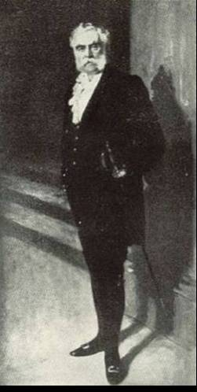

|  |
Argyll Robertson's syndrome = A frequent symptom of neurosyphilis, especially tabes dorsalis, and other diseases of thecentral nervous system, in which the pupil is small and responds slowly or not at all to light, but reaction to accommodation and convergence is retained.
Douglas Moray Cooper Lamb Argyll Robertson
was one of the first surgeons to specialize entirely in the field of
ophthalmology and his name has been forever associated with the phenomenon
he described in the pupil found in tabes dorsalis.
In 1869 Argyll Robertson described the phenomenon in two articles. The pupils of these patients were small; they did not react to light, but reacted at accommodation and were only incompletely dilated by atropine. Miotic, irregular pupils without reaction to light were known in singular cases of tabes dorsalis and paralysie générale since the end of the eighteenth century. The combination of miosis and pupils without reaction to light while the power of contraction during accommodation was retained, however, had never before been described.
The "Argyll-Robertson's pupil" soon attracted much attention and was to take a prominent position in the sometimes hateful debate going on in the latter part of the nineteenth century about a common aetiology of tabes dorsalis, paralysie générale and other cerebral lues. Among the more famous proponents of a luetic aetiology were Jean Alfred Fournier (1832-1915) and Sir Jonathan Hutchinson (1828-1913).
Not until the beginning of this century was lues generally accepted as the definitive causes of the different manifestations from the nervous system, following the discovery by Schaudinn and Hoffmann of the treponema pallidium in 1905 and August Paul von Wassermann’s (1866-1925) serologic test in 1906.
Douglas Moray Cooper Lamb Argyll Robertson was born in 1837 in Edinburgh, where his father, John Argyll Robertson, was a general surgeon, with a special interest in surgery of the eye. He received his early education in Edinburgh, and then studied medicine at St. Andrews, from where he graduated in 1857, the year of his father’s death. He returned to Edinburgh to work as a house surgeon at the Royal Infirmary before departing for Berlin to study under the leading ophthalmologist of the day, Albrecht von Graefe (1828-1870). In this he was following on the work of his father who had been a lecturer in surgery at Edinburgh in the extra-mural school and had confined himself chiefly to ophthalmic surgery. During the 1850s, the invention of the ophthalmoscope by Hermann Ludwig Ferdinand von Helmholtz (1821-1894) in 1851, and the new operations such as iridectomy introduced by von Graefe in 1856 ensured that ophthalmology developed into a specialty of its own right.
The first ophthalmic surgeon on the staff of the Royal Infirmary was William Walker, who was elected in July 1855. But Argyll Robertson, who had qualified in medicine at the age of 20, had gone almost straight into this subject. He was a lecturer in diseases of the eye at the Edinburgh Medical School as early as in 1862. In the March edition of Edinburgh Medical Journal 1863, he published an article of great importance on the Calabar bean. The Calabar bean (Physostigma venenosum) is the seed of a leguminouis plant found in Calabar, in the eastern region of Nigeria. A solution of the seed extract was used by the natives for judicial execution – if the man vomited it back then he was considered innocent.
The first experimental use reported on the bean was by Sir Robert Christison (1797-1882), one of Argyll Robertson's teachers, who did not describe any effects of the eye but recommended its use for the humane execution of criminals. Argyll Robertson instilled an extract into his own eye and made the deduction that physostigmine contracts the pupil. He predicted it would become “an agent that will soon rank as one of the most valuable in the ophthalmic pharmacopoeia”. The same year, his former teacher von Graefe utilized its miotic effect to facilitate iridectomy.
1862 he became a Fellow of the Royal College of Surgeons of Edinburgh. In 1867 he was appointed assistant ophthalmic surgeon to the Royal Infirmary of Edinburgh, and the following year described the phenomenon that bears his name. In 1870 he became full ophthalmic surgeon to the Royal Infirmary. From 1895 he was extraordinary, and from 1897 consultative ophthalmologist.
In 1894 the Calabar connection recurred in that a patient who had lived in Old Calabar for the previous eight years consulted him. She complained of a tickling, irritating sensation under the skin of the eyelids, which she had noticed, was worse in warm surroundings. He observed a worm “moving in a tortuous wriggling manner under the conjunctiva, the surface of which became slightly elevated as it moved along”. He anaesthetized the conjunctiva, incised it and removed the worm intact. It was found to be a filarial loa, which he presumed had got there through bathing in contaminated water. We know now that the vectors are flies and that the adult worms migrate through the subcutaneous tissue causing fugitive “Calabar swellings” and sometimes beneath the conjunctiva – hence the popular name “eye worm”.
Argyll Robertson in 1883 began teaching ophthalmology at the University of Edinburgh, remaining in this office until 1897, when he retired from active hospital service. From 1893 to 1895 he was chairman of the ophthalmologic society of England, 1886 chairman of the Royal College of Surgeons in Edinburgh, honorary eye physician to Queen Victoria and King Edward VII. In 1904, for health reasons, he moved to the Island of Jersey, and in 1908 made a journey to India. He caught a cold in Gondal near Bombay, and died there.
Argyll Robertson left no large number of medical publications; according to his obituary he "preferred the tongue to the pen as a medium". In 1863 he described the clinical effects on the eye from physostigmin - The calabar beam as a new ophthalmic agent, a major contribution to the treatment of glaucoma. He was also the first to describe a trepanning method of operation for certain cases of glaucoma.
Argyll Robertson was a man of broad medical interests, always emphasizing the role of ophthalmology in a wider medical context. He published observations on the albuminuretic retinopathy and lectured on the topic of "The therapeutical contributions of ophthalmology to general medicine" at his inauguration as president of the Ophthalmological Society.
Besides his professional standing Argyll Robertson seems to have impressed his contemporaries by his social appearance and party talents. This side of his personality was thus summarized in a biographical note: "His handsome features and his tall, athletic frame made him the cynosure of all female eyes in his youth and in his later years, clad in a grey frock-coat and top hat, his dignified manner combined with his genial old-world courtesy made him conspicuous in any assembly and a magnificent ambassador of Scotland, firmly establishing that country in the social world of ophthalmology. He attributed his good health to golf and considered it the finest recreation in the world. Even though it was recreation, however, he brought to it the same skill he had as a surgical operator, winning the gold medal of the Royal and Ancient Club of St. Andrews five times.
Sources:
Obituaries etc.